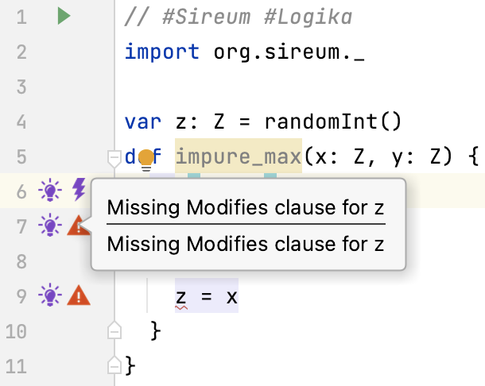
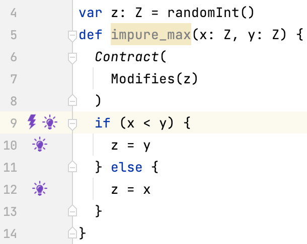
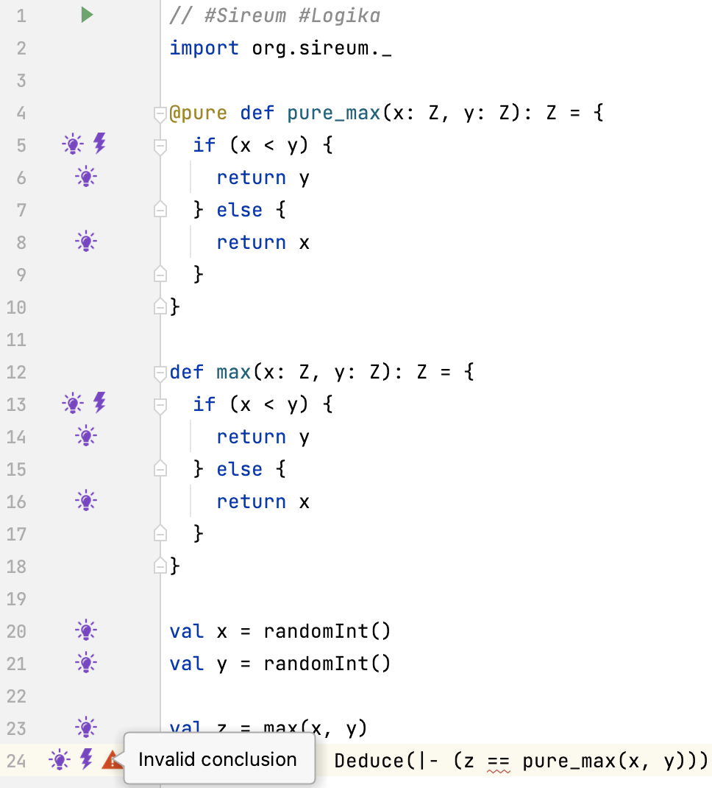
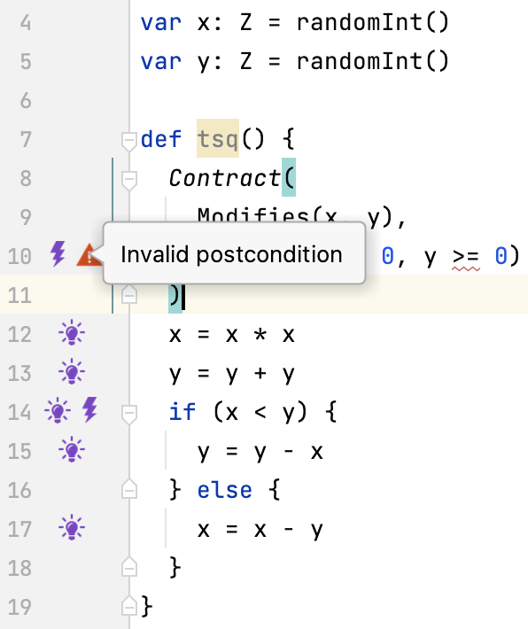

Lecture Summary: Contracts Test
Slang Functions
Example A: Pure Maximum Function
|
|
Functions consist of a signature def max(x: Z, y: Z): Z and a body { ... }.
The signature specifies the number of parameters, their type and the return type.
The body contains the implementation code.
Functions that do not return a value can also be defined def fun(x: Z, y: Z) { ... }.
|
|
The body of function max only refers to the function parameters.
Such functions are called pure.
The @pure attribute indicates to Logika that the function is free of side-effects.
When a contract is added it can be used in deductions like any other mathematical operator, e.g., + or <.
Let’s have a look at contracts.
Example A: Pure Maximum Function Contract
|
|
Contracts specify what’s required before the function is executed and what’s ensured after the function has been executed. Let’s state this informally.
|
|
What’s required is called the pre-condition of the function.
What’s ensured is called the post-condition of the function.
We have already sketched such contracts using assume-assert.
|
|
It looked similar to this, reading , in the contract clauses as conjunctions.
What’s new is the reference to Res in the ensures clause.
The special variable Res is needed to deal with return statement.
|
|
We can read return statements as assignments to Res as indicated in the comments.
This makes it straightforward to relate the post-condition to the function body.
In Slang syntax it looks as follows …
|
|
Remember to read return statements as assignments to Res.
Pure function pure_max with its contract can now be used in formulas.
In some context we could write, e.g., Deduce(|- (z == max(x, y))).
Example B: Impure Maximum Function
|
|
Function impure_max modified variable z outside its scope.
It has the side-effect of modifying variable z.
As opposed to function pure_max this function is impure.
Logika rejects the program above.

Example B: Impure Maximum Function with Modifies Clause
|
|
For impure functions the variables they modify outside their scope must be listed in the contract
This is done by means of the modifies clause that specifies a function’s frame.
A frame is a (comma-separated) list of variables.
|
|
The frame of function impure_max is just the single variable z.
We will discuss this more next week.
For now we note that for a function with side-effects it is important to know which variables it might modify.
Fame of a Function
Consider a function with a contract.
|
|
This could be achieved by assigning m to n, or n to m, or a common value to both.
In general, the result of a function could be obtained by modifying variables that were intended as parameters.
The modifies clause permits us to describe which variables might change and which do not.
|
|
In the function above the frame is specified in the Slang contract notation.
With the Modifies clause added Logika accepts the function.

|
|
Now we can specify the complete contract for the function.
Note the use of variable z in place of Res in the pure version of the function.
Specification and Implementation
|
|
We can now program with the impure function and use the pure function in correctness proofs. (Of course, we can also program with the pure function) Pure functions are often clearer but less efficient. They are good specifications. Impure functions are often more efficient but less clear. They are good implementations.
The fragment above proves that impure_max implements pure_max related by z == pure_max(x, y).
We also say that impure_max refines pure_max.
Note, the use of assume to constrain the values of x and y.
assume is most useful to support proofs of the kind above.
Exercise 1
Add contracts to functions max and pure_max so that the deduction at the end is verified.

Testing with Contracts
Example C: Testing the Maximum Function
|
|
Suppose the body of function max was more complex and we would have no proof that the body establishes the post-condition.
We would like to have a method that helps us systematically to come up with test cases.
Test Cases from Specifications
def max(x: Z, y: Z): Z = {
Contract(
Requires(x > 0, y > 0),
Ensures(Res == x | Res == y, x <= Res, y <= Res)
)
}
We only consider the contract that specifies the behaviour of the function. The pre-condition restricts the values to be considered for the defined behaviour of the function. The post-condition describes possible outcomes depending on the input values:
- If
Res == xtheny <= x - If
Res == ythenx <= y
Equivalence Partitioning
We can analyse the different in which y <= x and x <= y and their negations are conjoined to predict conditions occurring in an implementation.
|
|
We get three cases to consider: x < y, x == y, x > y.
These are called equivalence classes.
Boundary Value Analysis
We can analyse pre-condition x > 0 and y > 0.
They bound the possible values the parameters may take.
The smallest value for x and y is 1.
1 is a boundary value for x and y.
Aside. In some cases it is interesting to test the behaviour of a function when the pre-condition is violated, e.g., when security is a concern.
We have collected equivalence classes and boundary values.
These can be used to formulate test cases.
Test Case Formulation
Combining equivalence classes with boundary values we can calculate expected results.
| Class | Input x | Input y | Output Res |
|---|---|---|---|
| x < y | 1 | 2 | 2 |
| x == y | 1 | 1 | 1 |
| x > y | 2 | 1 | 2 |
The output Res must satisfy the condition Res == x | Res == y & x <= Res & y <= Res.
Inserting the values for x and y from the table,Res can be calculated.
Boundary values have been shown to be good choices for detecting faults in programs.
The derivation of the test cases above is driven by heuristics of equivalence partitioning and boundary value analysis.
- The test cases are not best choices but heuristically well chosen
- The test cases might miss important faults in a program
Test Cases from Implementations
|
|
Taking the body of function max we can make sure that all statements and conditions on all branches are tested.
“all statements and conditions on all branches” is called a coverage criterion.
Aside. Other coverage criteria exist (but we will not discuss them).
|
|
Let’s have a look at the fact corresponding to the program.
The body has two branches that are followed depending on whether the condition x < y is true or false.
We derive test cases from the fact
pre-condition &
bodyfact & (replacing ‘return e’ by ‘Res = e’ in body)
post-condition
For function max we get:
|
|
Conjoining either x < y or x >= y we force the choice between branch 1 and branch 2.
Two facts result, one for each branch.
Branch 1
|
|
Branch 2
|
|
Our prior analysis of the specification suggested that it would be good to split x >= y into the cases x == y and x > y to be tested separately.
Branch 1
|
|
Branch 2 (with x == y)
|
|
Branch 2 (with x > y)
|
|
Test Cases from Implementations (Using Boundary Values)
Branch 1: x == 1, y == 2
|
|
Branch 2 (with x == y): x == 1, y == 1
|
|
Branch 2 (with x > y): x == 2, y == 1
|
|
Branch 1: x == 1, y == 2
|
|
Branch 2 (with x == y): x == 1, y == 1
|
|
Branch 2 (with x > y): x == 2, y == 1
|
|
Branch 1: x == 1, y == 2, Res == 2
|
|
Branch 2 (with x == y): x == 1, y == 1, Res == 1
|
|
Branch 2 (with x > y): x == 2, y == 1, Res == 2
|
|
Branch 1: x == 1, y == 2, Res == 2
|
|
Branch 2 (with x == y): x == 1, y == 1, Res == 1
|
|
Branch 2 (with x > y): x == 2, y == 1, Res == 2
|
|
Branch 1
- satisfied by test case
- input:
x == 1, y == 2 - output:
Res == 2
Branch 2
- with
x == ysatisfied by test case - input:
x == 1, y == 1 - output:
Ress == 1
Branch 2
- with
x > ysatisfied by test case - input:
x == 2, y == 1 - output:
Res == 2
Symbolic Execution
Symbolic Execution of the Function Branch 1
|
|
- Entering the function yields (
x: X, y: Y, Res: RES), (PC:X > 0, Y > 0) - Executing
if (x < y) {yields (x: X, x: X, Res: RES), (PC:X > 0, Y > 0, X < Y) - Executing
return y // "Res = y"yields (x: X, y: Y, Res: Y), (PC:X > 0, Y > 0, X < Y) - Leaving the function yields (
x: X, y: Y, Res: Y), (PC:X > 0, Y > 0, X < Y, Y == X | Y == Y, X <= Y, Y <= X)
Symbolic Execution of the Function Branch 2
|
|
- Entering the function yields (
x: X, y: Y, Res: RES), (PC:X > 0, Y > 0) - Executing
} else {yields (x: X, x: X, Res: RES), (PC:X > 0, Y > 0, X >= Y) - Executing
return x // "Res = x"yields (x: X, y: Y, Res: X), (PC:X > 0, Y > 0, X >= Y) - Leaving the function yields (
x: X, y: Y, Res: X), (PC:X > 0, Y > 0, X >= Y, X == X | X == Y, X <= X, Y <= X)
Result of the Symbolic Execution
Symbolic execution of function max produces the following two results.
- (
x: X, y: Y, Res: Y), (PC:X > 0, Y > 0, X < Y, Y == X | Y == Y, X <= Y, Y <= Y) - (
x: X, y: Y, Res: X), (PC:X > 0, Y > 0, X >= Y, X == X | X == Y, X <= X, Y <= X)
We can state these as facts:
x == X, y == Y, Res == Y, X > 0 & Y > 0 & X < Y & (Y == X | Y == Y) & X <= Y & Y <= Yx == X, y == Y, Res == X, X > 0 & Y > 0 & X >= Y & (X == X | X == Y) & X <= X & Y <= X
These facts are very similar to those we have seen when looking at programs as facts. The only differences are:
- We use symbolic values
X,Y, andRes Reshas been replaced byYandX, respectively
In the second branch we can distinguish X == Y and X > Y as before.
Into the three remaining cases we can insert the boundary values we have determined before.
- Test Case 1
input:
x == X, y == Y, output:Res == Y, X > 0 & Y > 0 & X < Y & (Y == X | Y == Y) & X <= Y & Y <= Y - Test Case 2
input:
x == X, y == Y, output:Res == X, X == Y, X > 0 & Y > 0 & X >= Y & (X == X | X == Y) & X <= X & Y <= X - Test Case 3
input:
x == X, y == Y, output:Res == X, X > Y, X > 0 & Y > 0 & X >= Y & (X == X | X == Y) & X <= X & Y <= X
Exercise 2
Formally determine the test cases for the function below.
|
|
Remember that this function has a side-effect.
Testing for Faults
Test Cases for Faults in Implementations
|
|
Is the function above correct? No. Can we determine a test case confirming this? 
Counterexamples from Implementations
We seek a counterexample showing that the post-condition does not hold.
More formally, this is expressed,
pre-condition &
bodyfact & (body does not contain a return statement!)
!post-condition
For function tsq we get:
|
|
Let’s focus on the failing post-condition y >= 0, considering branch 1.
Test Cases for Faults in Implementations
|
|
This is unsatisfiable. We have:
At(x, 1) >= 0andAt(y, 1) > At(x, 1)- Therefor,
At(y, 1) - At(x, 1) > 0
Let’s have a look at branch 2.
|
|
We proceed as if y < 0 was a post-condition and apply the same methods as before.
We find: At(x, 0) == 0, At(y, 0) == -1, y == -2.
Failing test case:
- input:
x == 0, y == 0 - output:
y == ? // where ? must satisfy ? >= 0
Exercise 3
Use Symbolic execution for the calculation of the counterexample. Correct the function.
Exercises
Exercise 4
|
|
- Correct and verify the function above
- Find a counterexample first by calculation
- Derive test cases for the function
- What are input and output?
- Considering the post-condition choose suitable equivalence classes and boundary values
(Consider
p == 0andy == 0for the uncorrected function) - How many test cases do you get?
- Add deductions that explain that your function is correct
Exercise 5 (Outlook)
|
|
Add the contracts according to the comments preceding the functions. Add deductions that explain that your implementation is correct.
Summary
We have discussed pure and impure functions.
We have introduced contracts with:
- Pre-conditions,
- Post-conditions, and
- Frames
We have discussed how to derive test cases from:
- Specifications (resp. function contracts) and
- Implementation (resp. function bodies – and contracts)
We have analysed programs that contain faults and derived test cases for those.